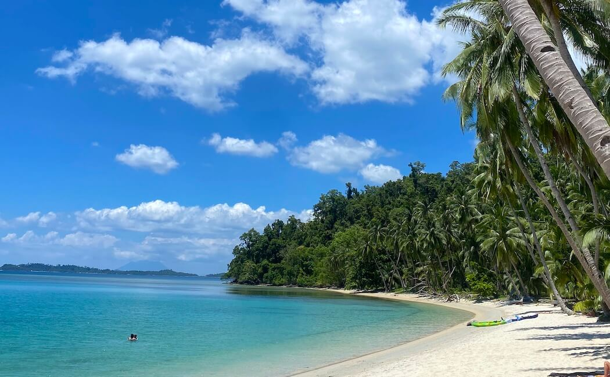

El Nido, Palawan, Philippines
White Beach in Port Barton offers calm turquoise waters, soft white sand, and a peaceful atmosphere perfect for escaping the busy city life. It's a wonderful place to relax, swim, or simply enjoy the natural beauty of Palawan's coastline.
"Very peaceful and less crowded. The island hopping tour was amazing!" — Jenny L.
| Package | Price |
|---|---|
| Day Tour | ₱2,199 |
| Adventure Package | ₱4,699 |